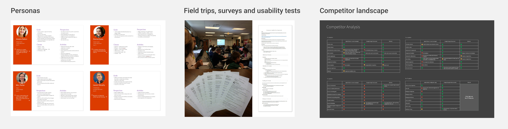
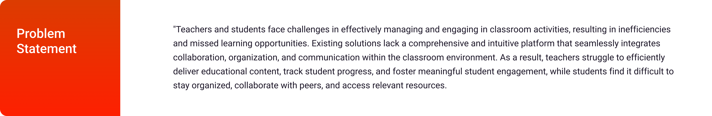
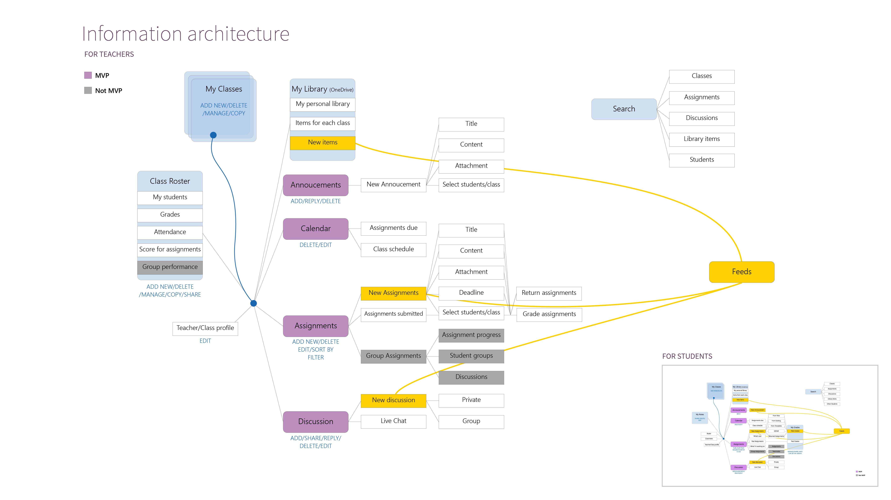
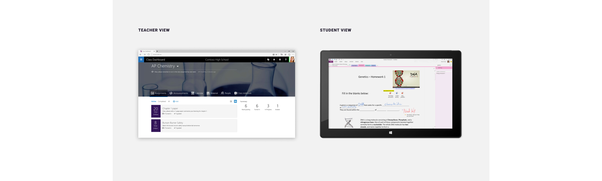

Case Study
Microsoft Classroom
01 Summary
Microsoft Classroom was an online blended learning platform for schools that aimed to simplify grading assignments and student communication in a paperless way. It was incubated in the Microsoft Startup Business Group from 2013 to 2015, I was honored to be one of the two UX designers on the team.
- My role encompasses product design and driving UX research, even in the absence of dedicated researchers
- I enthusiastically delve into various research methodologies, including surveys, field studies, focus groups, and user interviews, to gather valuable insights. I also spearheaded the creation of the 'Customer Advisory Board' version specifically tailored for teachers, ensuring their perspectives are incorporated into the design process.
02 Impact
Throughout my tenure as a UX designer
- I played a pivotal role in achieving product-market fit for the Microsoft Classroom project through iterative design processes
- By engaging in regular conversations with students, teachers, parents, and school administrators on a weekly basis, we gained invaluable insights that shaped the direction of the platform
- As a result of our efforts, Microsoft Classroom garnered adoption from numerous school districts
- Product launched in the summer of 2015 and piloted with Omaha Public Schools
03 Discovery and UX Research
Despite the absence of dedicated researchers, I fearlessly confronted the challenges faced by our customers, which include students, teachers and school district administrators, and employed various research methodologies on this discovery journey: I sent out surveys, conducted user interviews, drove focus group and usability tests, delving deep into the intricacies of the classroom experiences.

04 Define
Armed with the wealth of insights gathered from extensive user research, competitor review and stakeholder feedback, we embarked on the journey of mapping out the MVP features and user flows, this rigorous process allowed us to transform abstract ideas into tangible user experiences and laying the foundations for a truly transformative education experience for the students and teachers.

05 Ideate
During the ideate stage, I'm engaged in brainstorming, leveraging creativity in ideation sessions to generate concepts and explore ideas

06 Solution
With Class Dashboard teachers and students can stay organized and save time. Each class section has a OneNote Class Notebook, and class materials, notes, assignments and shared calendars will be stored online and in one place. Teachers and students can easily access class notebooks and documents from devices while at school or on the go.
